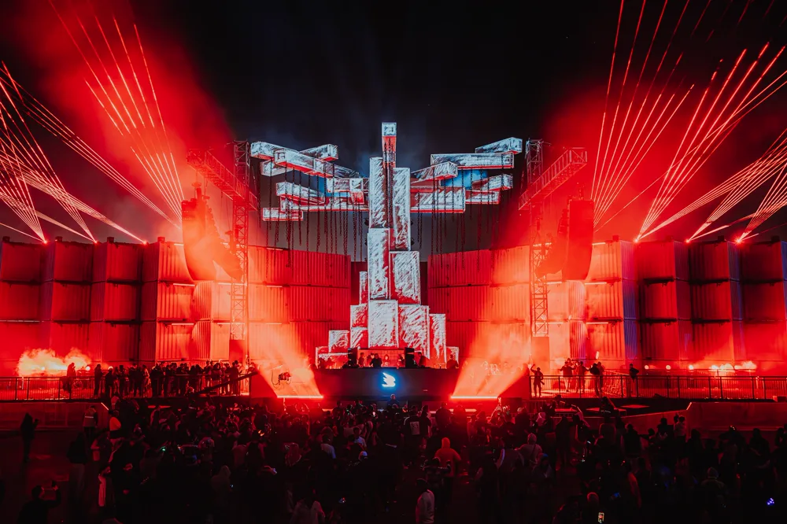
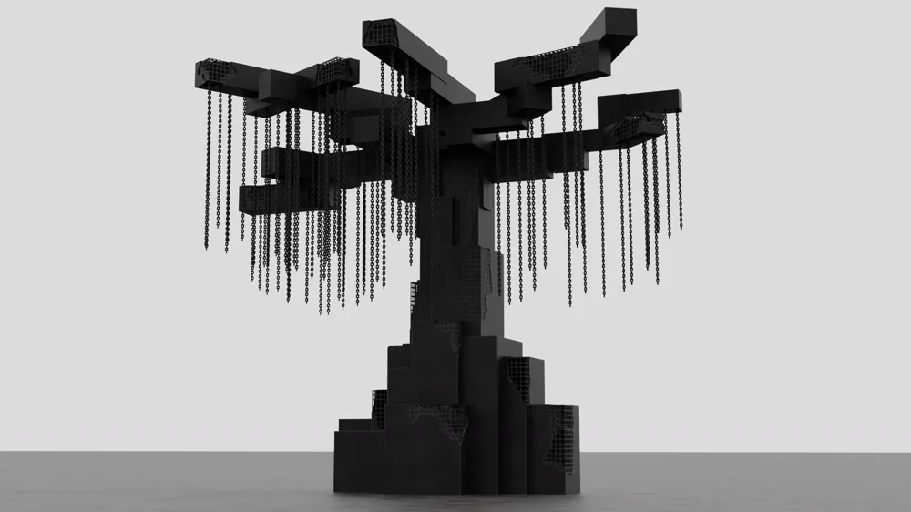
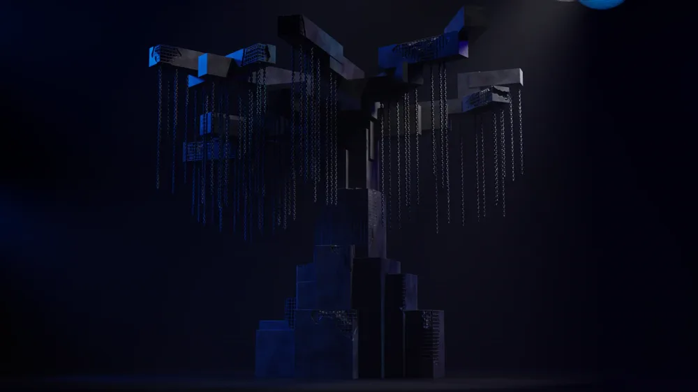
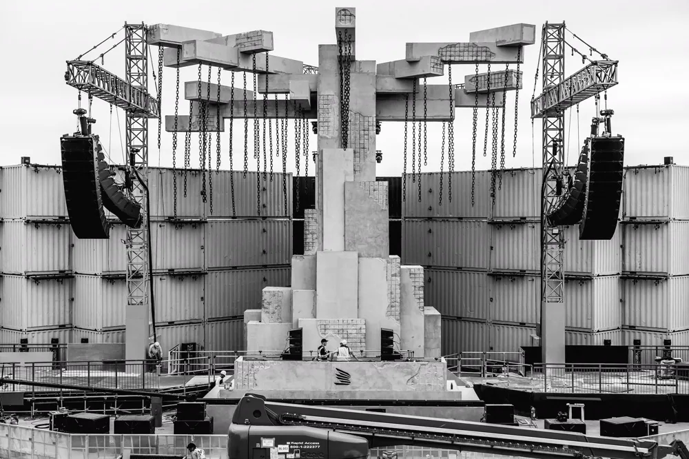
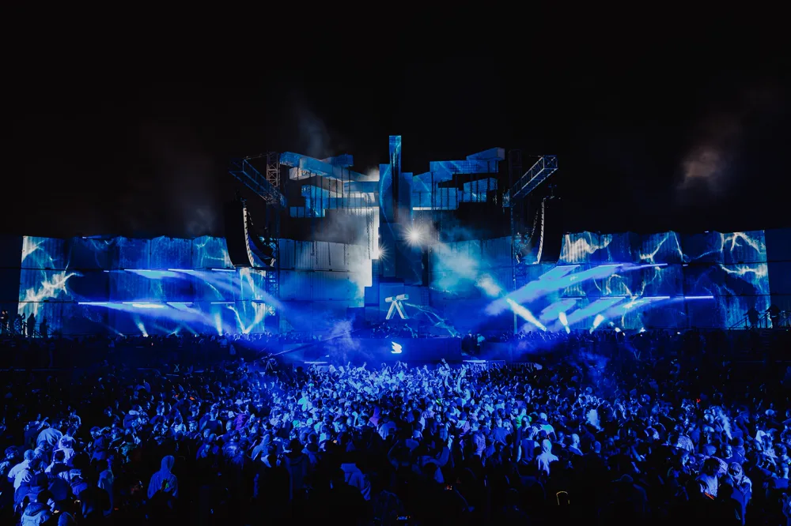

Live events
MDL Beast Soundstorm
A 3D concept for a huge centrepiece on the Soundstorm main stage. The model was used for test renders in pre-production, before the real structure was built on site.

Concept
A clean model to test form and scale, then the same model lit in the stage environment to preview how it would look under show lighting.


Built
The final piece, built on site as the centre of the stage.


Event photography: Luke Dyson / Vision Factory.